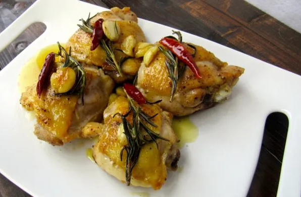

Rosemary Chicken

This is a good old rustic dish popular in rural Tuscany using the olive oil at harvest time and often made with rabbit in the same way.
Full of flavour, this simple dish is made with a few good-quality ingredients in just one large pan.
Use good-quality extra virgin olive oil as you will need quite a lot and the flavour is really enhanced by it! Excellent served with bruschetta.
Ingrediants
- 1kg x chicken pieces, thighs & drumsticks
- Salt & pepper
- Plain flour for dusting
- 150ml extra virgin olive oil
- Cloves from 1 garlic head, kept whole with skins on
- A large bunch of rosemary, broken in half
- 150ml white wine
Directions
- In a large pan, heat the olive oil over medium high heat.
- Trim excess skin and fat from chicken. Use your palm to flatten out the chicken pieces for even cooking. Season generously with salt and pepper.
li>Lightly dust with flour. Add chicken to hot oil, cooking for approximately two minutes per side, or until the chicken has a slight golden brown color.
Turn heat down to medium.
- Smash the garlic cloves and slice the chili peppers in half. Place a few sprigs of rosemary, 2-3 garlic cloves, and half a chili pepper on each piece of chicken.
Cover and cook for approximately twenty minutes, flipping the chicken pieces approximately half way through.
- Once the chicken is cooked through, add the white white to the pan and turn the heat back up to medium-high/high.
Allow approximately two minutes for the white wine to reduce.
- Remove from the heat and serve.
Return to main page